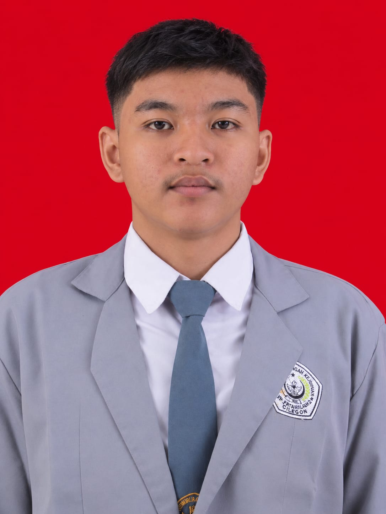

GDESIGN
STUDIO
STUDIO
Identitas Visual
Eksplorasi logo, warna, dan karakter sebuah brand.
PORTOFOLIO • DESAIN KOMUNIKASI VISUAL
Desain Komunikasi Visual
Saya adalah seorang pelajar jurusan Desain Komunikasi Visual (DKV) yang tertarik pada dunia desain grafis, fotografi, dan editing. Saya senang belajar hal baru, mengembangkan kreativitas, dan meningkatkan kemampuan diri.
Kenali Saya
Aku suka membuat desain kreatif, mengedit foto dan video agar terlihat lebih menarik, serta mengembangkan ide menjadi karya visual yang unik. Aku juga memiliki ketertarikan pada dunia sepak bola, khususnya Persija Jakarta, serta otomotif dan desain motor.
Lihat KaryaTools yang saya gunakan untuk mengembangkan ide menjadi karya visual.
Beberapa kategori karya yang menjadi ruang eksplorasi kreatif saya.
Eksplorasi logo, warna, dan karakter sebuah brand.
Komposisi tipografi dan visual untuk menyampaikan pesan.
Eksperimen bentuk, warna, dan olah gambar digital.
* Kartu di atas merupakan contoh tampilan kategori. Ganti dengan dokumentasi proyek asli saat portofolio siap.
PUNYA IDE ATAU PROYEK?
Saya terbuka untuk belajar, bertukar ide, dan mengerjakan hal kreatif bersama.
Hubungi Saya